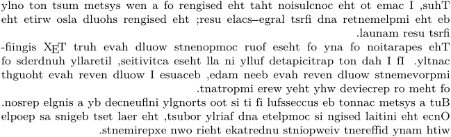
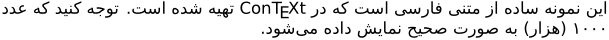
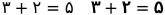
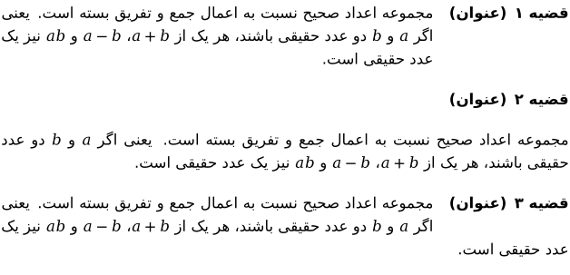
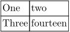
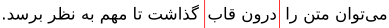
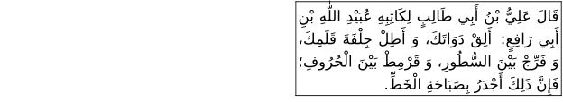
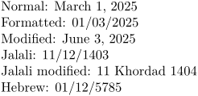
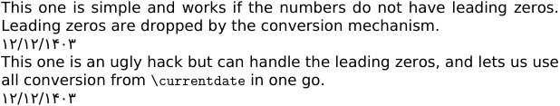
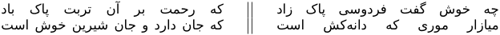

Here we collect several tips and tricks for dealing with right-to-left (RTL) texts as well as BiDi (bidirectional) texts. The large number of hooks in different commands makes it possible to use CONTEXT's support for such documents. However, there are limitations and/or bugs, as well. Everything here is tested in MkIV and we recommend that you try one of the most recent versions since certain bugs are fixed and features are added only in the beta. All the credit should go to Hans, Wolfgang and others who respond to questions on the mailing list.
Contents
Basics
Use \setupalign to change the text direction to RTL. This command sets the page, paragraph and text directions.
-
\setupalign[r2l] \input knuth
This produces:
- 
BiDi text
To work with documents with mixed RTL and LTR text, we need the bidi algorithms implemented in \setupdirections. Since numbers are LTR elements in Arabic, Persian and other RTL languages, we almost always need this.
-
\definedfont[dejavusans*arabic] % Some fonts have glyphs for ZWNJ, etc. Use the following to suppress them. \setcharacterstripping[1] \setupdirections[bidi=global,method=one] \setupalign[r2l] این نمونه ساده از متنی فارسی است که در \CONTEXT\ تهیه شده است. توجه کنید که عدد ۱۰۰۰ (هزار) به صورت صحیح نمایش داده میشود.
- 
LTR paragraph in RTL document
In addition to short LTR text pieces, sometimes one needs an LTR paragraph in a mainly RTL document. Using \righttoleft at the beginning of a paragraph (i.e., in vertical mode) achieves this. This command needs to be placed inside a group to limit its scope. I use the following.
\definestartstop[LTR] [before={\begingroup\lefttoright},after=\endgroup]
This can be used either as \LTR{some English text} for short pieces (for example, inside an RTL paragraph) or as a start/stop construct to produce LTR paragraphs.
Indic numerals
Arabic, Persian and Urdu documents typically use a different set of digits, called Indic; it's kind of ironic that the normal digits used in Latin languages are called Arabic! The ConTeXt beta has several number conversion methods to achieve this: persiandecimals, arabicdecimals. Note that these are different from persiannumerals and arabicnumerals. The naming of the latter is inspired from Roman numerals and the like, which use letters for displaying numbers.
To use these conversion methods, you should look for a conversion or numberconversion in the command of interest. Setting that to the above values would achieve the desired behavior. However, a few elements lack proper BiDi support; so it is best to place the above conversions inside a left-to-right block to guarantee correct number display.
For instance to get the page numbers using Indic digits, we can use the following.
\setuppagenumber[numberconversion=persiandecimals]
Indic numerals in math mode
In Persian (and perhaps Arabic and Urdu) we often want to have Indic numerals in math formulas. We can use a fallback mechanism to substitute all Latin digits by the Indic ones.
-
% use arabicindic for standard Arabic (Indic) digits \definefontfallback [Math] [dejavusansmono] [digitsextendedarabicindic] [check=yes,force=yes,offset=digitsnormal] \definefontfallback [Math] [dejavusansmonobold] [digitsextendedarabicindic] [check=yes,force=yes,offset=digitsbold] \setupbodyfont[dejavu] $3+2=5 \quad \bf 3+2=5$ \endgraf
This produces:
- 
This works because we essentially have the following definition in DejaVu typescript type-imp-dejavu.mkiv:
\definefontsynonym[MathRoman] [file:texgyredejavu-math][features={math\mathsizesuffix,mathextra},goodies=dejavu-math,fallbacks=Math] \definefontsynonym[MathRomanBold][file:texgyredejavu-math][features={math\mathsizesuffix,dejavu-math-bold,mathextra},goodies=dejavu-math,fallbacks=Math]
This uses the fallback Math. For other fonts, one may need to rewrite the math section of the typescript or change the name of the fallback.
By (re)defining certain macros, we can use commands like \digits to properly translate decimal points, thousand separators, etc. to their Arabic/Persian equivalents.
\def\digitsperiodsymbol{٫} \digits{1.5}
Structural elements
Footnotes
One may has complex requirements for footnotes in a bidirectional documents[1], but there are two basic elements that most RTL documents ask for.
- The footnote text had better go through the BiDi algorithm because it may contain numbers or otherwise LTR material.
- Footnote rule should either default to the right-hand side or agree with the direction of the first footnote paragraph.
\setupfootnotes[rule=paragraph] % available in beta only; set it to right to have it always on the right. \startsetups[bidi:footnotes] \setupdirections[bidi=on] \stopsetups \setupnotes[footnote][setups=bidi:footnotes]
To change the numbers to Indic numerals (used in Arabic, Persian and Urdu documents), you can use the following.
\setupnotation[footnote][numberconversion=persiandecimals] % available in beta only
In general, footnotes originating in RTL paragraphs are typeset on the right and those within LTR text produce LTR footnotes. With the above change, both types end up with Indic digits. Some more work is to be done if these are not what you want.
Sectioning
To get the section numbers right as well as their directions both in the head and in the table of contents, I use the following setup.
\setuphead[part,chapter,section][conversion=LTRpersiandecimals,numberstyle=\righttoleft]
Itemize
Use persiandecimals or the other values to number itemizations.
\startitemize[persiandecimals] \item First \item Second \stopitemize
The multi-column versions (using keys columns or horizontal) have a default left-to-right direction. To fix that, use either of the two solutions below. One sets is per \startitemize while the other sets it globally.
\startitemize[columns,two][direction=reverse] \item First \item Second \item Third \item Fourth \stopitemize
% The global solution \setupmixedcolumns[itemgroupcolumns][direction=reverse]
Enumerations and descriptions
Enumerations are a kind of descriptions, hence I focus on the former here. Same restrictions apply to the latter as well. The discussion here is based on recent betas, which differs slightly from the (old) stable version here.
In MkIV and MkXL we use alternative option in \defineenumeration to pick its general form. All the options (left, serried, top, margin, etc.) seem to work in the latest beta, provided that one sets key headalign=r2l and the surrounding paragraph is aligned r2l.
-
% hack to make dejavu typescript work \definefontfeature[default][arabic] \setupbodyfont[dejavu,sans] \setupdirections[bidi=global,method=one] \setupalign[r2l] \defineenumeration[theorem][headalign=r2l,alternative=text,text=قضیه ,numberconversion=persiandecimals,title=yes] \startbuffer[sam] \starttheorem[title=عنوان] مجموعه اعداد صحیح نسبت به اعمال جمع و تفریق بسته است. یعنی اگر $a$ و $b$ دو عدد حقیقی باشند، هر یک از $a+b$، $a-b$ و $ab$ نیز یک عدد حقیقی است. \stoptheorem \stopbuffer \getbuffer[sam] \setupenumeration[theorem][alternative=top] \getbuffer[sam] \setupenumeration[theorem][alternative=left,hang=2] \getbuffer[sam]
- 
Notice that alternative=left in the RTL environment means that the heading is really on the right.
Multi-column document
Similar to the above, we can pick right-to-left ordering for the columns.
\startcolumns[n=2,direction=reverse] \input knuth \stopcolumns
There is currently a bug that leads to incorrect section numbering inside RTL columns.
Tables
CONTEXT has several mechanisms for typesetting tables: see Tables. Natural tables are the recommended construct, but they are somewhat verbose. It's easier for quick small tables to use the older macros adapted (and enhanced) from the TaBlE package. This is not actively developed, so we do not hope for new RTL features in particular.
Using them on their own ignores the paragraph direction and sets an LTR table. However, when wrapped in \leftaligned or its friends, we get RTL/LTR tables depending on the paragraph direction.
-
\definefontfeature[default][arabic] \setupbodyfont[dejavu,sans] \setupdirections[bidi=global,method=unicode] \setupalign[r2l] \midaligned{\starttable[|c|c|] \NC \REF[cB]{ماه} \NC \REF[cB]{تعداد روز} \NC \AR \NC ژانویه \NC ۳۱ \NC \AR \NC فوریه \NC ۲۸ \NC \AR \NC مارس \NC ۳۱ \NC \AR \stoptable}
Now with natural tables, the direction=reverse key turn the order of columns in each row to be from left to right.
Note that the alignment within cells is a separate option to set up.
-
% works only in beta as of March of 2025. \bTABLE[align=right, direction=reverse] \bTR \bTD One \eTD \bTD two \eTD \eTR \bTR \bTD Three \eTD \bTD fourteen \eTD \eTR \eTABLE
- 
Frames and Colors
Single-line framing mechanisms work well without modification inside text:
-
\definedfont[dejavusans*arabic] \righttoleft میتوان متن را \inframed[framecolor=red]{درون قاب} گذاشت تا مهم به نظر برسد.
- 
The produced picture above is clipped in this illustration, so the top and bottom red framing is not visible. It does work in practice though.
When you need multiple lines, the align key has to be set perhaps in combination to width.
Setting align=r2l is a good choice as it works with and without a wrapping \leftaligned.
Without the wrapper, the entire frame (not its content) will be aligned to the left regardless of the surrounding text direction. If you want to ragged alignment, note that the meaning of flushleft and flushright values of the align key changes once you add the wrapping alignment command. To control hyphenation, etc. for the alignment of text, more options can be added as discussed in Text_blocks/Environments/Frames.
-
\definedfont[dejavusans*arabic] \setupalign[r2l] \leftaligned\framed[width=5cm,align=r2l]{\input khatt-ar\endgraf}
- 
\framedtext works similarly and handles multi-paragraph text but still doesn't break the text across pages even between paragraphs.
Date and Time
The standard \currentdate and \date command provide options to typeset Jalali and Hebrew dates.
-
Normal: \currentdate\par Formatted: \currentdate[dd,/,mm,/,y]\par Modified: \date[m=6,d=3]\par Jalali: \currentdate[jalali:to,dd,/,mm,/,y]\par Jalali modified: \date[m=6][jalali:to,d,~,m:jalali,~,y]\par Hebrew: \currentdate[hebrew:to,dd,/,mm,/,y]
- 
todo: There are problems to get the Jalali month name translated to Farsi while setting \mainlanguage[fa].
Though \currentdate has options for changing the type of numbers (e.g., to Roman numerals or Abjad), the conversion to Persian decimals does not work for some technical reason. The following fixes work instead.
-
\definedfont[dejavusans] This one is simple and works if the numbers do not have leading zeros. Leading zeros are dropped by the conversion mechanism. \persiandecimals{\rawdate[jalali:to,d]}/% \persiandecimals{\rawdate[jalali:to,M]}/% \persiandecimals{\rawdate[jalali:to,y]} This one is an ugly hack but can handle the leading zeros, and lets us use all conversion from \type{\currentdate} in one go. \startluacode function persmap(s) local stream = tostring(s) local mapping = languages.decimals.persian local gsub = string.gsub return mapping and gsub(stream, ".", mapping) or stream end \stopluacode \def\persmap#1{\ctxlua{context(persmap("#1"))}} \def\mycurrentdate[#1]{\persmap{\rawdate[#1]}} \mycurrentdate[jalali:to,dd,/,mm,/,y]
- 
The same approach work with \currenttime as well.
\persmap{\currenthour:\currentminute}
Poems
Classical Persian poetry is usually composed of hemistiches and can be typeset as follows:
-
\usemodule[hemistich] \definedfont[dejavusans*arabic] \setupalign[r2l] \hemistiches {چه خوش گفت فردوسی پاک زاد} {که رحمت بر آن تربت پاک باد} \hemistiches {میازار موری که دانهکش است} {که جان دارد و جان شیرین خوش است}
- 
TODO
Here are some of the things to be added:
- Float numbering
- Margin notes
- Indices and sorting
- Textbackground
- Metapost
For more information, you can look at Dabeer that is a sample set of macros (ongoing work) for typesetting Persian documents using ConTeXt.